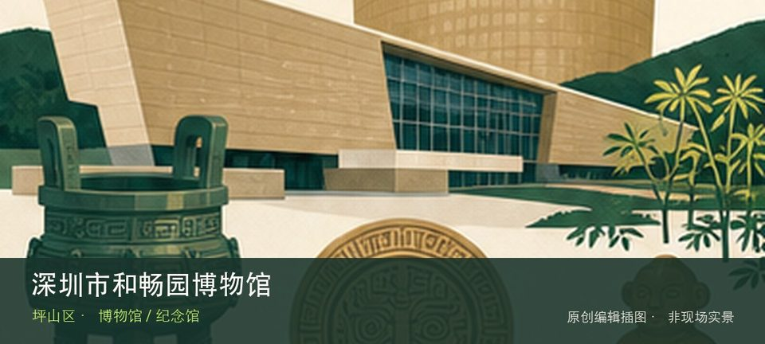

适合谁
适合对该专题有明确兴趣的人，也适合作为高温和雨天行程；开放不明时不宜临时前往。

SHENZHEN GUIDE · 251
丹梓中路 · 博物馆 / 纪念馆
深圳市和畅园博物馆位于丹梓中路，民办收藏和园林式展示空间构成场馆特色，具体藏品门类与开放日应先确认，避免仅凭名称推断内容。从和畅园收藏陈列转向园林式场馆空间时，地点的空间、历史或使用方式才会变得清楚。理解这处场馆，重点不是把所有展柜看完，而是沿着和畅园收藏陈列和园林式场馆空间两条线索辨认其专题边界。常设展、开放楼层和时段可能调整，专程前往前仍应核对场馆当天公告。
WHY GO
适合对该专题有明确兴趣的人，也适合作为高温和雨天行程；开放不明时不宜临时前往。
第一次到深圳市和畅园博物馆先把和畅园收藏陈列设为主目标，再视天气和现场边界决定是否前往园林式场馆空间；返程节点应在出发前确定。
公共交通先到丹梓中路片区，再以深圳市和畅园博物馆公开参观入口为终点；校园、园区或预约型场馆须同时核对门禁与开放日。
自驾优先使用深圳市和畅园博物馆所属建筑、园区或邻近正规公共停车场；预约时一并确认车牌登记、门岗和社会车辆准入规则。
全年可安排，尤其适合高温或降雨日；台风、极端天气及布展期仍可能临时调整开放。
NEARBY IDEAS